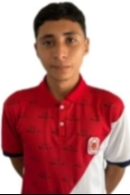

Encargada de supervisar el uso de los recursos del colegio.
Equipo de Contraloría
Miguel Angel Quigua
Responsable de auditorías internas y transparencia.

Juan Guaitarilla
Encargado de finanzas y presupuestos estudiantiles.
Santiago Valencia
Responsable de seguimiento y evaluación de proyectos.
×
Maria Paula Cabrera
Nombre completo: Maria Paula Cabrera Ospina
Sede: Sede Principal
Descripción: Maria Paula es la contralora estudiantil del Colegio Paulo VI. Su principal función es supervisar el uso de los recursos del colegio, garantizando transparencia y eficiencia en su administración. Además, promueve la rendición de cuentas y la participación estudiantil en la gestión de los bienes comunes.
×
Miguel Angel Quigua
Nombre completo: Miguel Angel Quigua Lozada
Sede: Sede Jose Maria Calvache
Descripción: Miguel es el responsable de auditorías internas en la contraloría estudiantil. Se encarga de revisar los procesos administrativos y financieros del colegio para asegurar que se cumplan las normas y se utilicen los recursos de manera adecuada.
×
Juan Guaitarilla
Nombre completo: Juan Manuel Guaitarilla Sierra
Sede: Sede Principal
Descripción: Juan apoya a Breyner Garay en el área de tecnología, colaborando en el desarrollo de herramientas digitales y soluciones tecnológicas que facilitan la gestión y transparencia de los recursos del colegio. Su trabajo conjunto ha permitido mejorar la eficiencia y comunicación dentro de la comunidad estudiantil.
×
Santiago Valencia
Nombre completo: Johan Santiago Valencia Mejia
Sede: Sede Jose Maria Calvache
Descripción: Santiago es el responsable de seguimiento y evaluación de proyectos en la contraloría estudiantil. Se asegura de que las iniciativas estudiantiles cumplan con sus objetivos y se ejecuten dentro de los plazos y presupuestos establecidos.